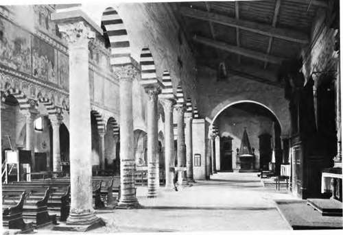

Historical Sketch. Part 2
Description
This section is from the book "Mural Painting", by F. Hamilton Jackson. Also available from Amazon: Mural Painting: -1904.
Historical Sketch. Part 2
The most ancient Christian paintings are in the catacombs of S. Domitilla (SS. Nereus and Achilleus), on the Yia Ardeatina, and S. Priscilla, on the Via Salara, Rome. Many interesting paintings occur also in the catacombs of SS. Pietro and Marcellino, S. Prse-textatus, and SS. Trasone e Marcellino, etc. The best period is the latter .part of the second century and the beginning of the third. Paintings of a later date are for the most part weaker copies of the subjects treated at this period. Biblical subjects are rare. Those most frequently occurring are " The Good Shepherd," with a pendant called " L'orante," the soul separated from the body. The Baptism of Christ, Noah in the Ark, the Resurrection of Lazarus, the Feeding of the Five Thousand, and the History of Jonah sometimes appear, generally with a symbolic meaning. Towards the fifth century an attempt at portraiture becomes visible in the " Orantes." As long as the catacombs were used for burial (till the commencement of the fifth century) saints have no attributes, and no nimbi appear, not even for Christ and the Apostles. The figure of the Virgin only appears in rare paintings of the Adoration of the Magi, a curious difference from the practice of later periods. The "Concilio Illiberitano,,, held in 305, forbad paintings of God or the Trinity, "picturas in ecclesiis esse non debere ne quod colitur et adoratur in parietibus depingatur." At this period the cultus of saints had not commenced. A few figures of saints with attributes appear from the fifth to the eighth centuries, and after this period painting was dethroned by mosaic for a time and composition became traditional. In the eleventh century paintings appear again, examples of which may be seen at S. Urbano alia Caffarella near Rome, legendary subjects, probably painted about 1011, by some local artist, with an attempt at expression and action; and similar fragments are at S. Agnese.
Interior of the Clmrch of S. Piero in Grado, near Pisa.
There is no doubt that mural painting never ceased, even during the darkest portion of the Middle Ages, though no doubt the works then executed had small value as works of art When Attila descended into Italy in 452, destroying and devastating, he saw on the wall of the emperor's palace at Milan a picture of the two Augusti, Theodosius II., the Illuminator, and Valentinian, on golden thrones, with Scythians crouching before them: he therefore commissioned an artist to paint on the opposite wall himself on his throne and the two emperors before him, one with a miller's sack on his shoulder filled with gold, while the other was pouring the contents of a similar sack at his feet. The palace of Theodolinda was decorated with wall-paintings (591), and several of the Lombard churches bear signs of having been painted. In the sixth century Venantius Fortunatus says that the walls of S. Giustina, Padua, were painted with the deeds of S. Martin. In 731 Gregory III. reconstructed S. Crisogono in Trastevere, and ornamented it with paintings. At the time of Charlemagne (800) it was held, both in Italy and France, that a church ought to be covered with paintings inside, and it was not thought to be finished until they had been executed. The names of a few painters of this period have come down to us, such as Aribert or Auripert da Lucca, of the eighth century, and Eribert da Verona, of the ninth century, but most of those mentioned were miniaturists. Many paintings on wall and roof were executed in France in the tenth century, and also at Milan, Monte Cassino, Salerno, and the celebrated abbey of Farfa. Hugues, of the convent of Moutier - en - Der, executed in 999 new paintings in the church of Chalons - sur - Marne to replace those of more ancient date decayed by efflux of time. Several painters are named also as living in the monastery of S. Gall. The church of the ancient port of Pisa, S. Piero in Grado, said to be the place where S. Peter first set foot in Italy, built between 600 and 800, is decorated with wall-paintings which are believed by Pisan archaeologists to have been executed before 1000 A.D., though Burckhardt sets them down as of the thirteenth century, and thinks that the artist also worked at Assisi in the upper church of S. Francis. It has arches coloured red and white, and between the arches are coloured decorations. Above the lines of the arches are little tabernacles in incipient perspective, within which are polychrome figures of all the popes up to Leo IIL (795). Above this is another little decoration in relief, painted also, and above again a large decoration in compartments, with the history of the martyrdom of S. Peter, after which there is a row of windows with painted arches between, and in the false windows, which have pilasters and polychrome arches, are accurately painted wooden shutters, now open and now half closed, and angels peeping through the latter looking into the sanctuary. The painting, that is to say, forms the principal part of the architectural design. The church of S. Angelo in Formis (ad Formas), so called because of the numerous aqueducts which led from the mountain down to Capua, about four and a half miles from Capua, is a very interesting church from the early frescoes which it contains, apart from the remains of the temple of Diana Tifaitina, worked up into its structure and fittings, on the site of which it stands. It replaces a more ancient church, which was also painted, and the paintings are mentioned as being there in the seventh century by Giovanni Diacono. It belonged at that time to Monte Cassino, but was taken from it by the Capuan archbishop, and in the time of Desiderius, Riccardo, prince of Capua, obtained it by exchange from Archbishop Hildebrand, and gave it again to Monte Cassino. This was in 1065. Desiderius wished to build a monastery there for forty monks, and rebuilt the church also, which had become ruinous. It was then made so fine, the artists employed being no doubt some of the Greeks who were working for him at Monte Cassino, that the Capuan clergy had recourse to Gregory VII. to get it back, but vainly.
Continue to: